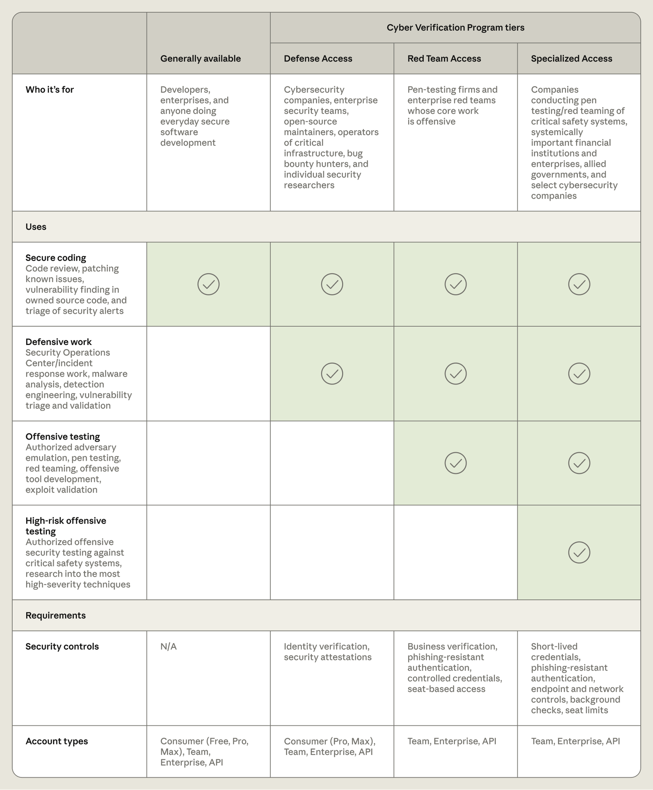
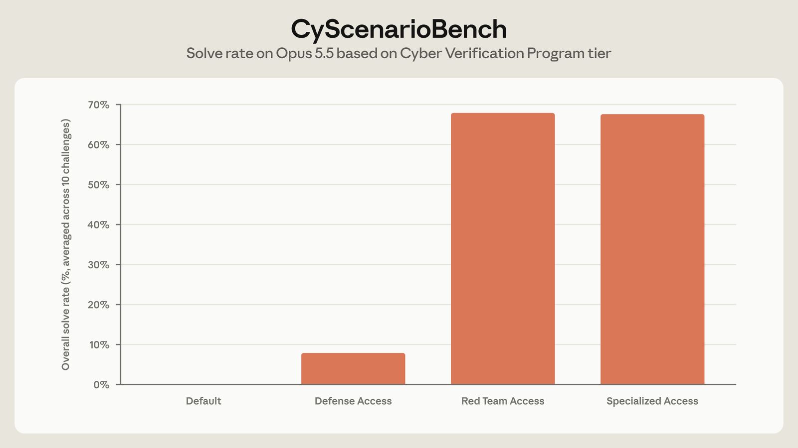
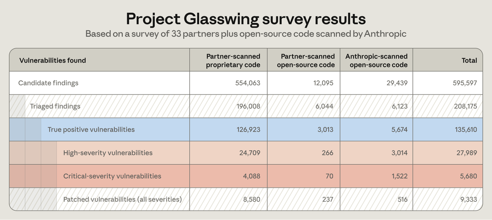

We’re launching a new, expanded version of our Cyber Verification Program (CVP), which makes advanced cyber capabilities and reduced blocking classifiers available to qualifying security professionals. The program now consists of three access tiers, which allow security teams to apply for the level of access that best suits their work. Each tier includes access to our most capable models, including Claude Opus 5.5, Claude Sonnet 5.5, Claude Mythos 5.1, and new models moving forward. Interested customers can apply here.
Cybersecurity is inherently dual use: the same capabilities that enable a security team to find and fix a vulnerability can also help a malicious actor exploit it. For this reason, our generally available models, such as Claude Opus 5.5, Claude Fable 5.1, and Claude Sonnet 5.5, have conservative cyber safeguards that block most cyber work. This is intended to limit the harmful activities malicious actors can carry out using our models, while we continue to work to reduce false positives for secure coding.
But defenders also need access to the best tools and most powerful capabilities to secure their systems. For the past six months, we’ve enabled trusted access through two programs: Project Glasswing and the CVP. The former gave a group of organizations securing the most critical software access to Claude Mythos; the latter gave vetted security teams access to reduced safeguards on Claude Opus and Claude Sonnet models.
Now, we’re integrating these programs into one expanded offering, designed to give more security organizations access to the capabilities they need to protect their systems.
New access tiers
The updated access tiers make specific model capabilities available to security professionals based on the scope of their cyber work. Each has different verification requirements and security controls.
Defense Access is for defensive work, including security operations center and incident response tasks, reverse-engineering malware, and analyzing and validating vulnerabilities. Examples of qualifying organizations include security teams at companies, nonprofits, universities, and government bodies who are defending systems they own or maintain; operators of critical infrastructure of any size, such as regional hospitals or municipal utilities; smaller security firms; open-source maintainers; and individual researchers with a track record of reported vulnerabilities.
We expect many organizations conducting defensive cybersecurity work to qualify for this tier. We aim to respond to applications within a few days.
Red Team Access adds authorized penetration testing and red-teaming to the defensive uses above. Examples of qualifying organizations include in-house red teams, government red teams, and security and penetration testing firms. Organizations in this tier can only perform adversarial testing against systems they are authorized to test, including IT systems in critical industries. Users will still experience real-time blocks on actions that could cause physical harm or mass disruption, such as deploying ransomware, damaging physical systems, or pen testing high-risk safety systems.
Given the increased eligibility requirements and security controls, we expect applications in this tier to take a few weeks to review. Qualifying organizations will be enrolled in the Defense Access tier while we review their Red Team Access applications. Currently, this tier is for organizations only; individual researchers are not eligible.
Specialized Access, which has the fewest cyber blocks, is reserved for a limited set of verified organizations that are authorized to test safety systems that could impact people’s lives or disrupt markets, such as flight operating systems, power grids, telecom networks, interbank transfer infrastructure, and government administrative networks.
For this tier, we currently review every organization in depth in collaboration with the US government. Existing members of Project Glasswing will transition to this tier and do not require reapproval for current models.
Our generally available models can continue to be used for tasks such as code review, patching known issues, vulnerability finding in owned source code, and triage of security alerts.
Data retention is required for organizations enrolled in the program so that we can monitor for cyber misuse. Once Enterprise Frontier Safeguards (EFS)—a new solution that combines the privacy of zero data retention with robust safeguards—is available later this fall, eligible organizations will be able to store data in cloud infrastructure they control. Until EFS is available, organizations with access to Claude Fable 5.1 or Claude Mythos 5.1 with zero data retention can also use CVP with zero data retention. To register interest in EFS, fill out this form.
Below, we share an overview of what’s available at each CVP access level, as well as requirements for security and privacy controls:

Testing the efficacy of our tiers
To assess the efficacy of our CVP protections, we ran Claude Opus 5.5 through CyScenarioBench—an evaluation that measures whether models can plan and execute multi-stage cyber operations under realistic constraints—with safeguards tuned for our different CVP tiers. Because this evaluation involves complex, interactive offensive scenarios, we would expect Claude to experience significant blocks both on the generally available model and in the Defense Access tier, while experiencing no blocks in the Red Team Access and Specialized Access tiers.
Across five attempts at each of the 10 CyScenarioBench challenges in each access tier, we found that:
- Without CVP access, every task was blocked on the first prompt;
- In the Defense Access tier, 46 of the 50 trials were blocked at some point in the challenge, while the remaining four tasks succeeded; and
- In the Red Team Access tier, no blocks occurred, and Claude Opus 5.5 successfully completed 34 of the 50 tasks—effectively equivalent to the model’s 67.6% success rate on this evaluation with no safeguards applied (representative of Specialized Access).
These evaluations give us confidence that we can make advanced cyber capabilities safely available to a broader set of defenders, expanding the defensive efforts we began with Project Glasswing. We will continue to refine our tier-based classifiers over time.

Giving defenders the advantage
Through Project Glasswing, we found that Claude Mythos models significantly increased the rate at which organizations were able to identify vulnerabilities in their systems. Through the program, our partners uncovered at least 129,000 verified software vulnerabilities between April and July 2026. And through our own open-source scanning efforts, we found an additional 5,500 verified software vulnerabilities between April and October 2026. Of these verified vulnerabilities, more than 33,000 have so far been rated as critical- or high-severity. This is likely an undercount, as it is based on survey data from only a subset of Glasswing partners. As such, we expect the true impact to be at least five times higher.
When asked how long it would have taken them to find the same number of vulnerabilities without Claude Mythos models, several partners told us that the models had increased their rate of vulnerability finding by months or even years. Read more from our partners at Booz Allen and Comcast about their experience.

The changes we’re making to our Cyber Verification Program today are intended to extend the impact of Project Glasswing to a much larger number of cyber defenders. We’re also continuing our efforts to help secure open-source software and critical infrastructure. In the coming weeks, we’ll share more about this work and what we’ve learned as we continue to work to give defenders a permanent advantage.
Apply for access
Interested organizations can apply to CVP here. As part of the application process, we will verify all applicants and request proof of the required security controls for the relevant access tier. Existing CVP members will keep their current settings for previous models and will be automatically evaluated for access to Claude Opus 5.5, Claude Sonnet 5.5, and Claude Mythos 5.1 through the updated program. Admins will need to assign access to specific workspaces by following these steps.
CVP is available on the Claude Platform, Google Cloud’s Vertex AI, and Microsoft Foundry. CVP is only available on Amazon Bedrock for customers eligible for Enterprise Frontier Safeguards.
If you’re blocked on work you think your tier should allow, you can report it here. Full details on each tier can be found in our Help Center.